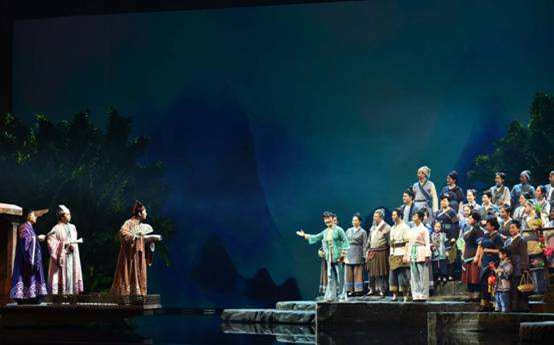

歌剧《刘三姐》

刘三姐是广西壮族民间故事里面一个深受人民群众爱戴的传奇人物。她的故事从老百姓的传说到改编成了戏剧和电影，不断掀起一阵阵热潮，引领着时尚和潮流 。风靡一时的电影《刘三姐》曾经倾倒了海内外无数观众，脍炙人口的歌曲也流传广远。而这部电影是根据广西歌舞剧《刘三姐》移植创作的，其中很多唱段都保留了原剧基本的音乐元素。可以说，歌舞剧带动了电影，电影又推广了歌舞剧。不同 的表演艺术共同造就了《刘三姐》的大红大紫。尽管这许多年以来，《刘三姐》的 “命运”迭宕起伏，但是其艺术魅力已经深深扎根在人民心中。
民族歌剧《刘三姐》改编自1959年版广西彩调剧《刘三姐》、1960年版长影音乐故事影片《刘三姐》及1960年版广西歌舞剧《刘三姐》，讲述了关于刘三姐的动人民间传说，表现了刘三姐的美丽善良、正直勇敢及歌唱才华，颂扬了以刘三姐为代表的劳动人民的勤劳与智慧，展示了民族艺术的绚丽多彩和桂林山水的秀美神韵。
歌舞剧《刘三姐》已经成为我们民族艺术园里一枝绚烂的奇葩。